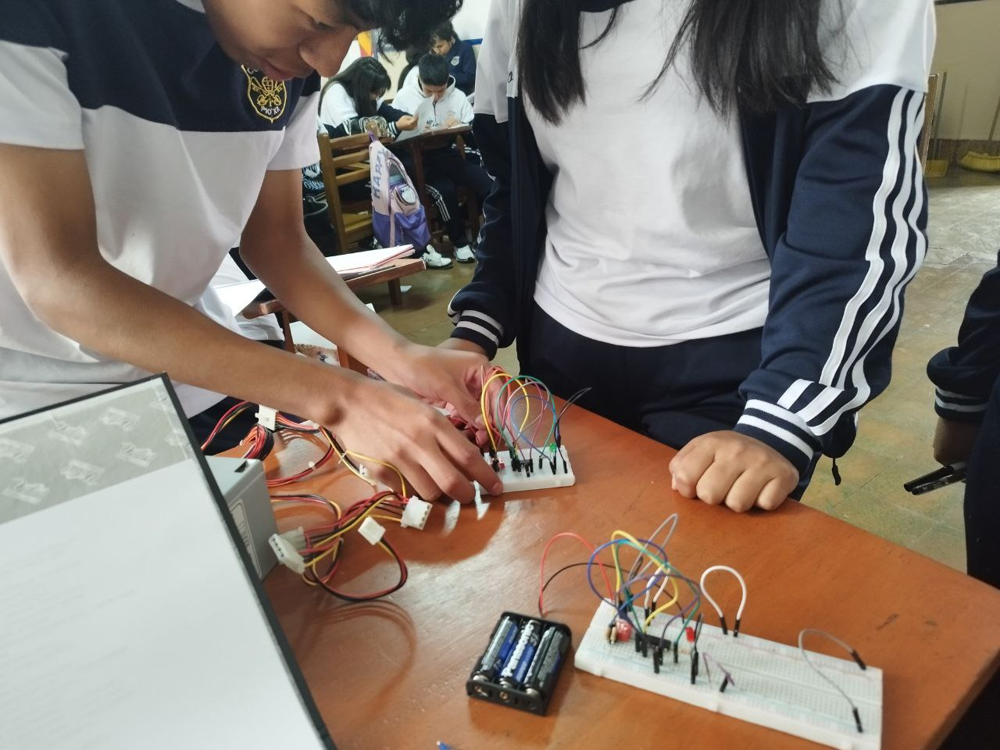

Experiencias educativas transformadoras
1) Uso de la plataforma MateBolivia - Colegio PIO XII
Publicado el 10 de mayo de 2025 — Autor: Sergio Alcocer
Esta experiencia se desarrolló con el curso 2do de secundaria con la
finalidad de aprender jugando. Los estudiantes utilizaron la
plataforma MateBolivia para practicar las operaciones con enteros y
fracciones de manera interactiva. Se realizaron actividades de
gamificación y se promovió el trabajo colaborativo.
2) Midiendo edificios con ayuda de la Trigonometría
Publicado el 11 de mayo de 2025 — Autor: Sergio Alcocer
Esta experiencia se desarrolló en 5to de secundaria con la finalidad
de aplicar funciones trigonométricas para medir la altura de edificios
reales. Los estudiantes utilizaron teodolitos (transportadores),
cálculos matemáticos y teléfonos móviles para capturar los ángulos
desde un punto fijo.
3) Aprendiendo lógica simbólica usando circuitos
Publicado el 11 de mayo de 2025 — Autor: Sergio Alcocer


Explicamos el tema de lógica proposicional y tablas de verdad
utilizando las compuertas lógicas NOT, AND y OR. Los estudiantes
diseñaron pequeños circuitos con compuertas lógicas usando materiales
reciclados y kits de electrónica, comprendiendo de manera práctica
proposiciones, conectores lógicos y tablas de verdad.